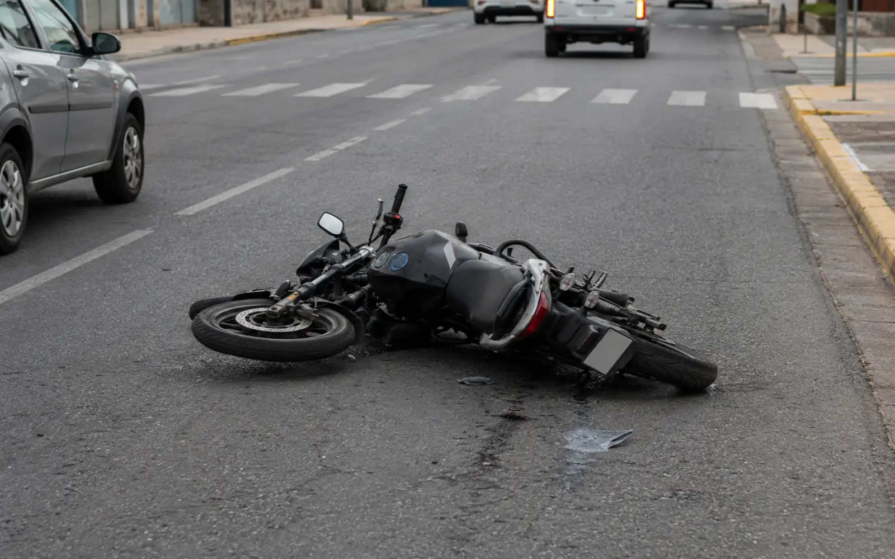

01
Accidentes entre automóviles
Es el supuesto más frecuente y también donde la intervención de las aseguradoras es más temprana. La discusión suele girar en torno a cómo ocurrió el hecho, quién tenía prioridad y qué alcance tienen los daños.
La constancia policial, las fotografías del lugar y de los vehículos y los datos del otro conductor y de su seguro constituyen el material sobre el que se sostiene el reclamo, y conviene reunirlo mientras la información permanece disponible.
02
Accidentes en motocicleta
El reclamo sigue la misma lógica que en cualquier otro accidente, pero en la práctica dos cosas cambian: suele discutirse más la mecánica del hecho, y las lesiones tienden a ser de mayor entidad.
Por eso la documentación médica adquiere un peso central. Conservar los estudios, las constancias de atención y el seguimiento posterior es determinante para acreditar las consecuencias que dejó el accidente.

03
Peatones
Cuando el damnificado es un peatón, la situación tiene particularidades propias en cuanto a la mecánica del hecho y a la prueba disponible, que muchas veces se reduce a la constancia policial y a los testigos presentes.
La atención médica inmediata y sus constancias son, también acá, la base del reclamo por las lesiones.
04
Lesiones
Las lesiones requieren una evaluación separada de los daños materiales. Algunas propuestas pueden formularse antes de que se conozca el alcance definitivo de las consecuencias físicas, por lo que resulta importante analizar la documentación médica disponible.
El alcance de un reclamo por lesiones depende de la prueba médica: la atención inicial, los estudios, el tratamiento y el seguimiento posterior. La interrupción del seguimiento incide sobre la prueba disponible.
El seguimiento médico y la conservación de estudios y comprobantes, aun los que parezcan menores, constituyen la prueba de las consecuencias del accidente.
05
El trato con las aseguradoras
La aseguradora interviene en defensa de los intereses que le son propios dentro del contrato de seguro. Por ello, una propuesta indemnizatoria debe evaluarse según los conceptos que comprende, los que excluye y los efectos jurídicos de su aceptación.
Eso no significa que toda propuesta sea inconveniente: significa que conviene evaluarla antes de aceptarla, sabiendo qué contempla, qué deja afuera y qué implica firmarla.
06
Ofertas indemnizatorias
Una oferta es una propuesta, no una liquidación definitiva ni una obligación. La propuesta puede comprender sólo determinados conceptos y formularse cuando aún no se conoce el alcance definitivo de todos los daños.
Lo determinante es el efecto de la firma: un acuerdo puede cerrar la posibilidad de reclamar más adelante por conceptos que en ese momento todavía no estaban a la vista.
Qué conviene analizar antes de firmar
- Qué conceptos cubre la propuesta y cuáles deja expresamente afuera.
- Si hubo lesiones y qué consecuencias dejaron, con la prueba médica disponible.
- Qué implica el acuerdo respecto de reclamar en el futuro.
- Si el monto guarda relación con los daños efectivamente acreditados.
07
Documentación y prueba
El reclamo se sostiene con lo que pueda acreditarse. Buena parte de esa prueba se produce en las horas y los días posteriores al hecho, cuando lo último en lo que uno piensa es en documentar.
Qué conviene conservar
- La denuncia y la constancia policial del hecho.
- Fotografías de los daños, del lugar y de la posición de los vehículos.
- Los datos del otro vehículo, de su conductor y de su compañía de seguros.
- Datos de contacto de los testigos presentes.
- La documentación del vehículo y de su propio seguro.
- Todos los estudios, constancias de atención y comprobantes médicos.
Si le falta documentación
No impide consultar: parte del material puede obtenerse con posterioridad.
Cuánto tarda
Depende de si el reclamo se resuelve extrajudicialmente o en sede judicial.
08
Qué se puede reclamar
Además de los daños del vehículo, según las circunstancias del caso pueden reclamarse otros conceptos derivados del hecho. Cuáles corresponden y con qué alcance depende de la prueba disponible y de las consecuencias efectivamente acreditadas.
Conceptos que suelen integrar un reclamo
- Gastos médicos: atención, estudios, tratamientos y traslados.
- Incapacidad: las secuelas que las lesiones hayan dejado y su proyección.
- Daños materiales: la reparación del vehículo y los bienes dañados en el hecho.
- Otras consecuencias derivadas del accidente, según el caso.
Ninguno de estos conceptos se determina de manera automática. No resulta responsable anticipar un monto concreto sin examinar previamente la documentación, la prueba disponible y las circunstancias particulares del caso.